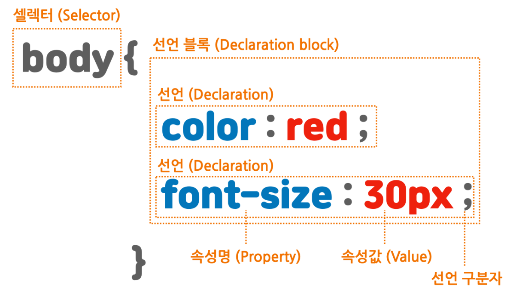

CSS는 Cascading Style Sheets의 약자로 디자인 요소를 시각화하는 스타일 시트 언어이다.

셀렉터는 태그 이름이나 id 또는 class를 선택한다.
셀렉터로 특정 요소를 선택했다면 중괄호 안에서 이 요소에 적용할 내용을 작성한다.
속성과 속성값의 끝에는 세미콜론(;)을 붙여 속성끼리 구분한다.
CSS를 특정 태그에만 적용하기 위해서는 태그를 사용한다.
<tag_name> {
<CSS_content>
}
id는 문서 내에 단 하나의 요소에만 적용할 수 있는 유일한 이름으로 CSS를 특정 요소에 적용하기 위해서는 id를 사용한다.
해당 id에 CSS를 적용하려면 Selector 앞에 "#"을 붙인다.
#<id_name> {
<CSS_content>
}
동일한 기능을 하는 CSS를 여러 요소에 적용하기 위해서는 class를 사용한다.
해당 class에 CSS를 적용하려면 Selector 앞에 "."을 붙인다.
.<class_name> {
<CSS_content>
}
HTML 문서에 CSS를 적용하는 방법에는 인라인 스타일, 내부 스타일 시트, 외부 스타일 시트가 존재한다.
인라인 스타일은 HTML 요소 내부에 style 속성을 사용하여 CSS를 적용하는 방법이다.
<div style="<CSS 내용>"></div>
내부 스타일 시트는 HTML 문서 내의 <head> 태그에 <style> 태그를 사용하여 CSS 스타일을 적용 하는 방법이다.
<head>
<style>
<CSS 내용>
</style>
</head>
외부 스타일 시트는 외부에 작성된 CSS 파일을 <head> 태그에 <link> 태그를 사용하여 적용시키는 방법이다.
<head>
<link rel="stylesheet" href="<CSS_file_path>">
</head>
CSS에서 사용되는 캐스케이딩의 의미는 어떤 스타일을 적용 받을지에 대한 우선순위를 뜻한다.
스타일 시트의 우선순위는 아래와 같다.
코드 순서는 늦게 선언된 스타일이 우선 적용된다.